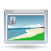

Software
| Software installieren | |||||
| Paketverwaltung Übersicht und Wissenswertes | Anwendungen hinzufügen Grafische Programme zur Softwareverwaltung | PPA Personal Package Archive (auf eigene Gefahr) nutzen | |||
| Für Ubuntu verfügbare Software, aufgeteilt nach Kategorien | |||||
|  | Desktop Aussehen und Verhalten der graphischen Oberfläche anpassen | Multimedia Musik und Filme hören, ansehen, erstellen und bearbeiten | Grafik Bildbetrachtung, -verwaltung und -bearbeitung; Textsatz (DTP) | ||
 | Büroanwendungen Produktivität und Arbeitsabläufe | Bildung Für Schüler, Studenten, Dozenten und Wissbegierige | Spiele Mit Spaß Zeit vertreiben | ||
 | Internet Browser, E-Mail, Instant-Messenger, Downloads | Serverdienste Einrichten und konfigurieren | Programmierung IDEs, Sprachen, Werkzeuge | ||
| Weitere Software-Themen | |||||
| Windows-Programme Windowsanwendungen mit Hilfe von Wine ausführen | Paketinstallation DEB Ein einzelnes Paket installieren | Sonstiges Weitere Programme ohne feste Kategorie | |||
- Erstellt mit Inyoka
-
 2004 – 2017 ubuntuusers.de • Einige Rechte vorbehalten
2004 – 2017 ubuntuusers.de • Einige Rechte vorbehalten
Lizenz • Kontakt • Datenschutz • Impressum • Serverstatus -
Serverhousing gespendet von